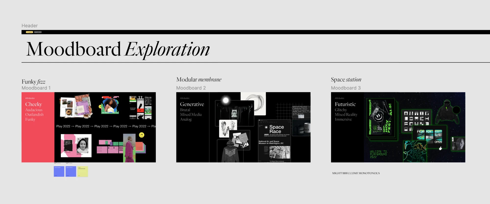
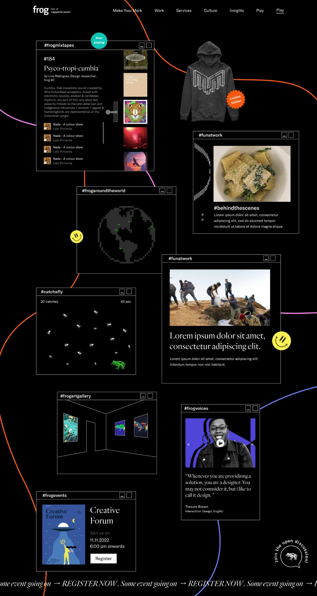
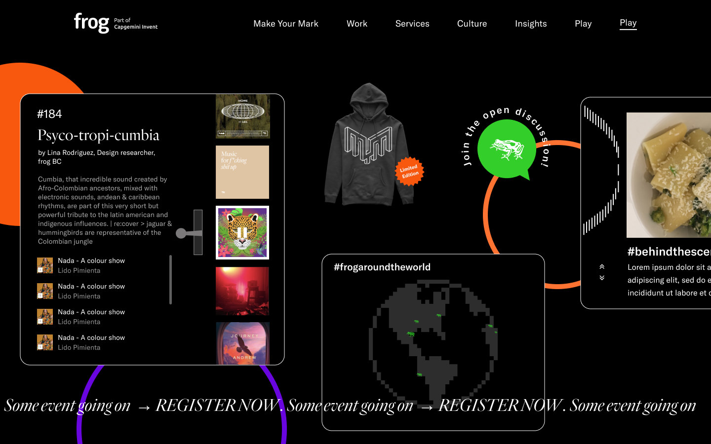
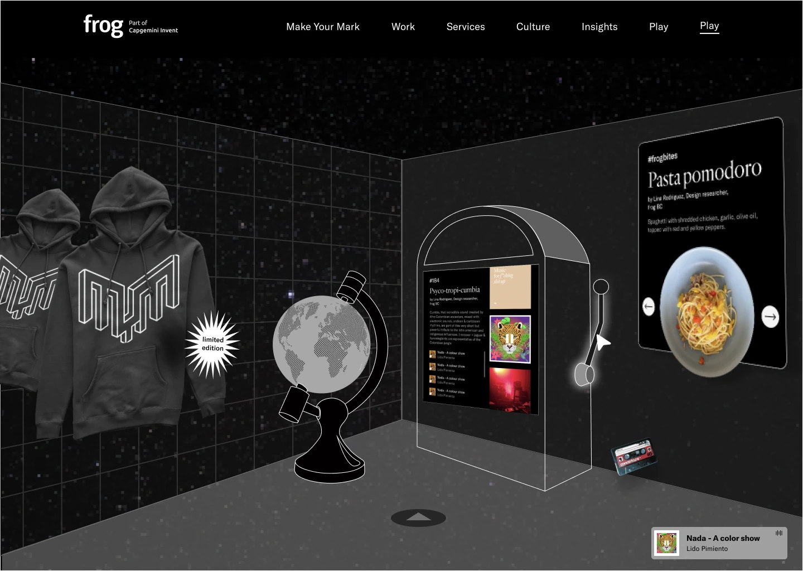
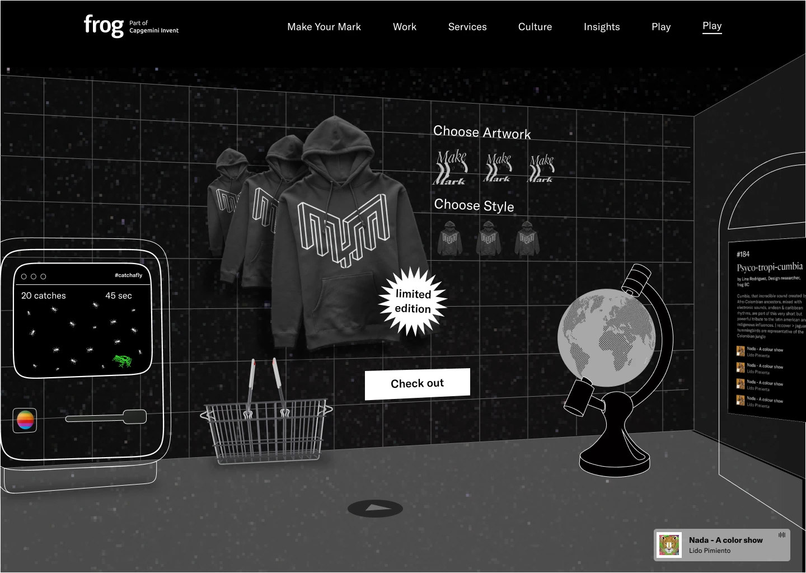
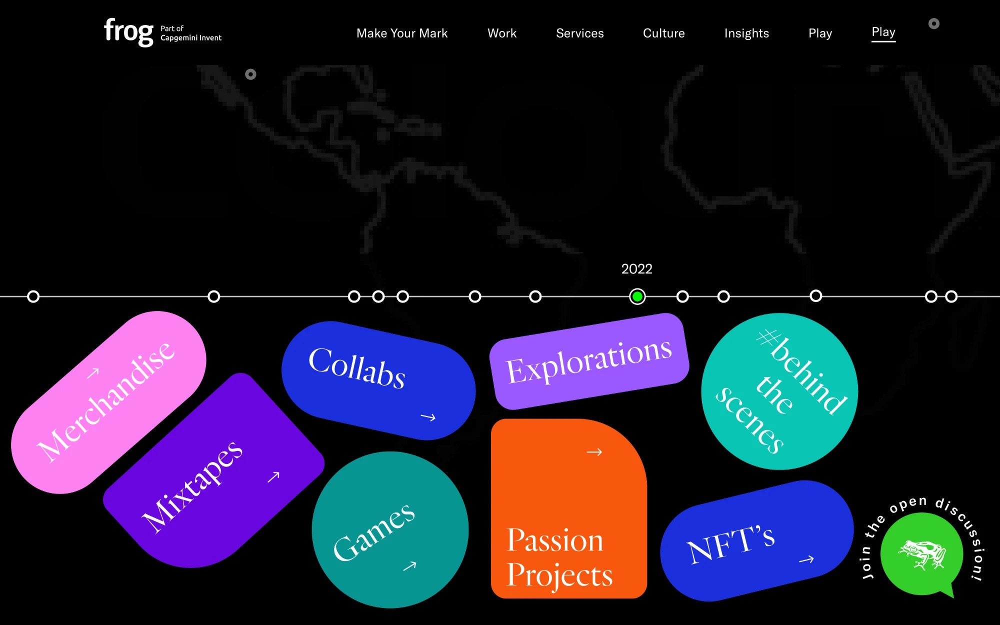
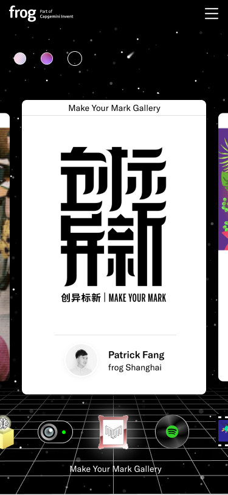
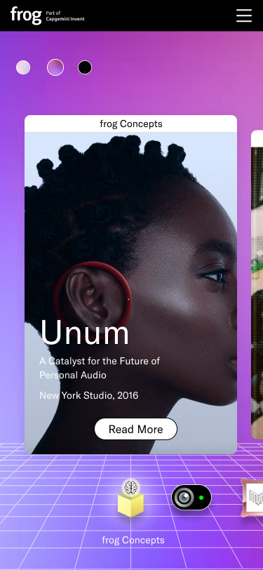

frog – Play
A playful window into frog
Play is a page on frog’s website that shares the culture behind the work, from mixtapes and studio initiatives to frog’s history, in a fun, interactive way.
I led the project with two other designers, working hands-on while coordinating with content owners and stakeholders across frog.
Background
The aim was to give a sneak peek into a frog’s mind: the experimental, fun side of frog culture and initiatives, to show that frog is a lot more than its work.
We imagined it as a curated collection: collabs, events, merchandise, interactive games, mixtapes, articles, passion projects, out-of-office shots, the 50 Friedolin gallery and even snippets from Slack channels.
It was made for the design community, potential clients and future frogs, as well as students, alumni, technologists and frogs themselves. It had to feel experimental, curious and whimsical, a little rebellious, spacey, lo-fi and immersive.
A frog world to explore, showing that frog is a lot more than its work.
Process
Content strategy first. We started by mapping what Play could hold, from frog culture, side gigs and events to art, people’s stories, games and merchandise, and prioritised the ideas to take forward.

Moodboards and concepts. We explored different directions, from Funky fizz and Modular membrane to Space station.

Three concepts. We explored three ways Play could behave: an interactive canvas of windows, a 3D museum to walk through, and a timeline. We took the canvas forward and evolved it into the final page.





A space look. We narrowed it down to a space look that evokes a universe of its own, a frog world, with a hint of nostalgia and an 8-bit feel in its desktop windows, folders and retro grid.
Outcome

